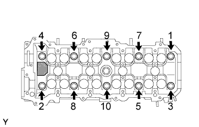
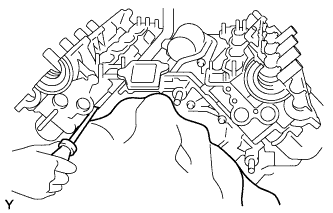

CYLINDER HEAD GASKET > REMOVAL |
| 1. DISCHARGE FUEL SYSTEM PRESSURE |
Discharge the fuel system pressure (Click here).
| 2. DISCONNECT CABLE FROM NEGATIVE BATTERY TERMINAL |
| 3. REMOVE FRONT FENDER SPLASH SHIELD SUB-ASSEMBLY LH |
 |
Remove the 3 bolts and screw.
Turn the clip indicated by the arrow in the illustration to remove the fender splash shield.
| 4. REMOVE FRONT FENDER SPLASH SHIELD SUB-ASSEMBLY RH |
| 5. REMOVE NO. 1 ENGINE UNDER COVER SUB-ASSEMBLY |
 |
Remove the 10 bolts and No. 1 engine under cover.
| 6. REMOVE NO. 2 ENGINE UNDER COVER |
 |
Remove the 2 bolts and No. 2 engine under cover.
| 7. DRAIN ENGINE COOLANT |

Loosen the radiator drain cock plug.
Remove the radiator cap. Then drain the coolant.
Loosen the 2 cylinder block drain cock plugs. Then drain the coolant from the engine.
Tighten the 2 cylinder block drain cock plugs.
Tighten the radiator drain cock plug by hand.
| 8. DRAIN ENGINE OIL |
 |
Remove the oil drain plug and gasket, and drain the engine oil into a container.
| 9. DISCONNECT FRONT NO. 2 EXHAUST PIPE ASSEMBLY |
Disconnect the air fuel ratio sensor connector.
Disconnect the heated oxygen sensor connector.
Remove the 3 nuts and 2 bolts, disconnect the front No. 2 exhaust pipe from the exhaust manifold LH and center exhaust pipe, and then remove the 2 gaskets.
Remove the bolt and disconnect the exhaust manifold LH from the No. 2 manifold stay.
| 10. DISCONNECT FRONT EXHAUST PIPE ASSEMBLY |
Disconnect the air fuel ratio sensor connector.
Disconnect the heated oxygen sensor connector.
Detach the heated oxygen sensor wire clamp.
Remove the 3 nuts and 2 bolts, disconnect the front exhaust pipe from the exhaust manifold RH and center exhaust pipe, and then remove the 2 gaskets.
Remove the bolt and disconnect the exhaust manifold RH from the manifold stay RH.
| 11. REMOVE COWL TOP VENTILATOR LOUVER SUB-ASSEMBLY |
Remove the cowl top ventilator louver (Click here).
| 12. REMOVE INTAKE MANIFOLD |
Remove the intake manifold (Click here).
| 13. REMOVE AIR TUBE SUB-ASSEMBLY RH (w/ Secondary Air Injection System) |
 |
Remove the 2 bolts, 2 nuts and air tube sub-assembly.
Remove the 2 gaskets.
| 14. REMOVE NO. 3 AIR TUBE (w/ Secondary Air Injection System) |
 |
Remove the 2 bolts, 2 nuts and No. 3 air tube.
Remove the 2 gaskets.
| 15. REMOVE NO. 1 AIR SWITCHING VALVE ASSEMBLY (w/ Secondary Air Injection System) |
 |
Remove the vacuum switching valve hose from the No. 1 air switching valve.
Remove the 2 bolts, gasket and No. 1 air switching valve from the rear water by-pass joint.
| 16. REMOVE NO. 2 AIR SWITCHING VALVE ASSEMBLY (w/ Secondary Air Injection System) |
 |
Remove the vacuum switching valve hose from the No. 2 air switching valve.
Remove the 2 bolts, gasket and No. 2 air switching valve from the rear water by-pass joint.
| 17. REMOVE WATER INLET HOUSING |
 |
Remove the 2 bolts holding the water inlet housing to the water pump.
Disconnect the water inlet housing from the front water by-pass joint and water pump. Then remove the water inlet and inlet housing assembly.
Remove the O-ring from the water inlet housing.
| 18. REMOVE FRONT WATER BY-PASS JOINT |
 |
Remove the 4 nuts, front water by-pass joint and 2 gaskets.
| 19. REMOVE WATER BY-PASS PIPE SUB-ASSEMBLY |
 |
Disconnect the connector.
Disconnect the wire harness clamp from the water by-pass pipe.
Disconnect the 2 vacuum switching valve hoses from the water by-pass pipe clamp.
Remove the bolt.
Pull out the water by-pass pipe.
Remove the O-ring from the water by-pass pipe.
| 20. REMOVE REAR WATER BY-PASS JOINT |
 |
Remove the 4 nuts, water by-pass joint and 2 gaskets.
| 21. REMOVE REAR NO. 2 TIMING BELT PLATE RH |
 |
Remove the 2 bolts, stud bolt and timing belt plate.
| 22. REMOVE REAR NO. 2 TIMING BELT PLATE LH |
 |
Remove the 2 bolts and timing belt plate.
| 23. REMOVE REAR TIMING BELT PLATE RH |
 |
Remove the bolt and rear timing belt plate.
| 24. REMOVE REAR TIMING BELT PLATE LH |
 |
Remove the bolt and rear timing belt plate.
| 25. REMOVE CAMSHAFT |
Remove the camshaft (Click here).
| 26. REMOVE CAMSHAFT TIMING TUBE ASSEMBLY |
 |
Mount the hexagonal portion of the camshaft in a vise.
Remove the screw plug and seal washer.
 |
Using a 10 mm hexagon wrench, remove the bolt and timing tube.
| 27. REMOVE CAMSHAFT DRIVE GEAR |
 |
Using SST and a 5 mm hexagon wrench, remove the 4 bolts, drive gear and oil seal.
| 28. REMOVE VALVE LIFTER |
 |
Remove the valve lifters and adjusting shims from the cylinder head.
| 29. REMOVE CYLINDER HEAD SUB-ASSEMBLY |
 |
Uniformly loosen the 10 cylinder head bolts on the cylinder head in several passes, in the sequence shown in the illustration.
Remove the bolts and plate washers.
 |
Remove the cylinder head by prying between the cylinder block and cylinder head with a screwdriver.
| 30. REMOVE CYLINDER HEAD GASKET |
| 31. REMOVE CYLINDER HEAD LH |
 |
Uniformly loosen the 10 cylinder head bolts on the cylinder head in several passes, in the sequence shown in the illustration.
Remove the bolts and plate washers.
 |
Remove the cylinder head by prying between the cylinder block and cylinder head with a screwdriver.
| 32. REMOVE CYLINDER HEAD GASKET LH |